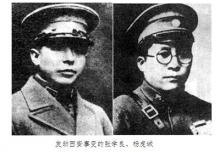

鹿野：真的是西安事变救了中国共产党吗？
作者：鹿野【本文为作者向察网的独家投稿，文章内容纯属作者个人观点，不代表本网观点，转载请注明来自察网(www.cwzg.cn)】

浏览大图
前天是西安事变八十周年。关于西安事变，现在非常流行的一个说法是张学良杨虎城出于民族大义扣押蒋介石，实现了逼蒋抗日，从而救了中国共产党。如果没有西安事变，中国共产党在国民党的围追堵截之下，势必走向覆灭。然而，只要我们认真考察一下西安事变前后的历史进程，就会发现这种说法是完全站不住脚的。
首先，就西安事变爆发的历史背景来看。张学良与杨虎城并不是一开始就心存民族大义，主张联共抗日的。相反，二人在开始的时候都积极遵从蒋介石的命令进行剿共，尤其张学良更是剿共最积极的将领之一。早在张学良的父亲张作霖时代，就杀害了中国共产党的创始人之一，最早举起马克思主义旗帜的李大钊。张学良一上台，就为了向蒋介石和帝国主义列强表达自己的反共决心，而挑起了震惊世界的中东路事件。当时日本控制的满铁在东北横行霸道，而苏联控制的中东路则对中国相对尊重的多，而且也表示愿意逐步归还给中国。张学良是对日本的侵略不置一词，集中力量非要武力强行收回中东路，结果赔了夫人又折兵，不仅没有收回中东路，反而把黑瞎子岛也给弄丢了。更重要的是，日本看出了张学良的欺软怕硬和实力的虚弱不堪。在1930年的时候，张学良又为了支持蒋介石派主力出关进行中原大战，于是造成东北空虚。日本趁机发动九一八事变，占领了全东北，掏了张学良的老巢。
但是，此时的张学良并没有放弃自己反共第一的政治主张，仍然积极支持攘外必先安内政策。可以说，张学良是在中国工农红军长征前后对反共出力最大的地方军阀之一，只不过张学良的战绩并不佳。1934年7月，仅有三千人的红25军与张学良派出来剿共的第57军115师的作战中，一举在长岗岭战役俘虏了3700多人。1935年10月1日，在劳山战役中，东北军王以哲下属的67军110师两个团和师部，被红军全歼，师长何立中战死，团长裴焕彩被俘。仅仅过了半个多月，第107师的619团在榆林桥全团覆灭。一个月以后，更大的一次失败到来，东北军第109师在直罗镇全师全军覆没。直罗镇战役的胜利，彻底粉碎了敌人对陕甘根据地的第三次“围剿”，为党中央和红军在西北建立和扩大根据地，推动全国抗战，举行了一个奠基礼。
一系列的战争的惨败导致张学良感到红军并不好打。特别是直罗镇战役以后，由于红军积极实行统一战线政策，把大量东北军被俘的人员和缴获过来的装备装备补充成为了红军的一个新师。红军与东北军呈现出此消彼长，红军越战越强，东北军越战越弱的局面。双方都清楚再这样打下去，东北军被红军完全歼灭只是一个时间问题。这种情况下，张学良才不得不接受了红军伸过来的橄榄枝。杨虎城的情况虽然要比张学良好一些，但也只不过是五十步与百步之别。总体来看，两人都是在与红军作战的过程中被歼灭了大量有生力量，打不过红军才不得不接受红军联合抗日的主张。相反的，红军则是占据主动的情况下不乘胜追击，宁愿放弃自己的优势保存张学良和杨虎城的颜面及实力。例如，红军曾经在占据绝对优势的情况下主动放弃瓦窑堡使张学良完成蒋介石的命令。在这种情况下，剿共已经在东北军和西北军中毫无市场。因此，西安事变中张学良和杨虎城采取逼蒋抗日的方针，并不是什么出于民族大义，更多的是红军的实力与政策使然。
另一方面，就西安事变的结果来看，很难说其是成功的。因为如果要是蒋介石真的接受了张学良和杨虎城的逼蒋抗日的主张，那么一个起码的条件自然是不会对张学良和杨虎城实行报复。可事实上，西安事变刚刚结束，蒋介石刚刚被释放，其第一件事情就是扣押了亲自送他返回南京的张学良，第二件事情便是撤销了杨虎城的职务。在以后的几个月里，蒋介石派出中央军进驻陕西，摧垮了东北军和西北军。这与其在被扣押期间，所做出的“未来要出于民族大义共同抗日”的表态是八竿子也打不着的。因此，我们显然不应该高估西安事变对于国内政治局势的作用。
有的朋友可能会问，那么，西安事变以后蒋介石确实基本上不怎么去竭力剿共了，这难道不是遵守西安事变时的承诺吗？有这种想法的朋友实在是太高估蒋介石的个人道德了。他既然可以不顾